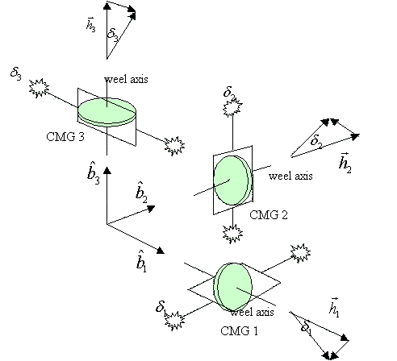
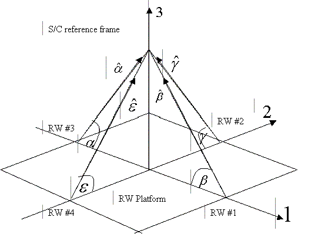
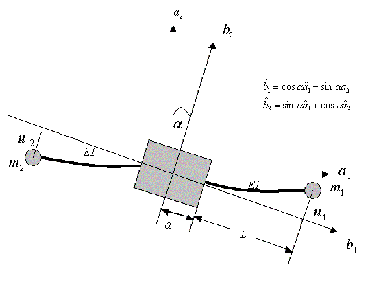
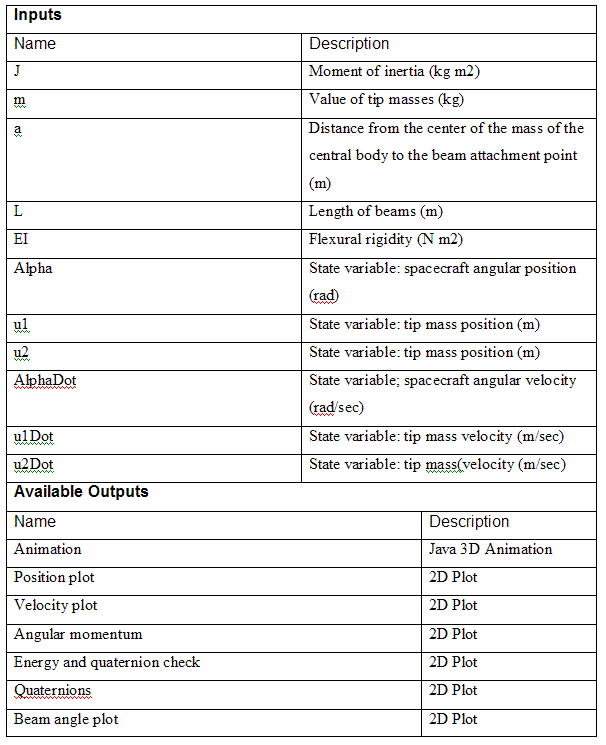

Description
In this project, to simulate a reorientation maneuver of a rigid
spacecraft
using CMGs, a configuration of 3 single-gimbal control moment gyros (CMGs)
aligned with
the principal axis was used. The illustration shows the CMG
configuration used.

Inputs
Ixx, Iyy, Izz
Principal moments of inertia
J
CMG inertia
A
CMG ginbal rate
psi
Commanded Euler angle
phi
Commanded Euler angle
theta
Commanded Euler angle
Initial Condition
w1, w2, w3:
Spacecraft angular velocities
q1, q2, q3, q4:
Quaternions
Omega 1
Gimbal rate of CMG 1
Omega 2
Gimbal rate of CMG 2
Omega
3 Gimbal rate of CMG
3
Description
This scenario uses Euler’s rotational equations of motion to simulate the
attitude dynamics of a rigid
spacecraft with optional body-fixed, constant
torques. Euler’s rotational equations of motion is found in
most of the
textbooks on spacecraft dynamics
Inputs
Ixx, Iyy, Izz Principal moments of inertia
M1,M2,M3 External torque acting in
the b1 direction
Initial Condition
w1, w2, w3:
Spacecraft angular velocities
q1, q2, q3, q4: Quaternions

Description
An attitude maneuver via momentum transfer based on the conservation of
angular momentum was
simulated. In this project, 4 reaction wheels in
a pyramid configuration was used; this configuration
provides redundancy
such that if one wheels become unable to operate for some reason,
the other
three reaction wheels can provide control torque in all three direction.

Inputs
Ixx, Iyy, Izz Moments of inertia
J
Reaction wheel inertia
RW angle
Tilt angle of reaction wheel axis
psi
Commanded Euler angle
phi
Commanded Euler angle
theta
Commanded Euler angle
Initial Condition
w1, w2, w3:
Spacecraft angular velocities
q1, q2, q3, q4:
Quaternions
Omega1
Angular velocity of RW 1
Omega2
Angular velocity of RW 2
Omega3
Angular velocity of RW 3
Omega4
Angular velocity of RW 4
Simulation Control
time step: Time step for the numerical integration routine
time: Duration of the simulation periond in seconds
Description
A flexible spacecraft is modeled as a central rigid body with two massless beams
attachd
symmetrically to the side of the central body. Each beam has a
concentrated mass at the tip. The
flexibility comes from the flexural rigidity EI of
the beams.

Inputs
J:
Moment of inertia
m:
Tip mass
a:
Distance as indicated in the illustration above (m)
L:
Length of the beam (m)
EI: Flexural
rigidity of the beam (N m2)
Initial Condition
Alpha:
Spacecraft angular position
u1:
Position of the first mass
u2:
Position of the second mass
AlphaDot:
Spacecraft angular velocity
u1Dot:
Velocity of the first mass
u2Dot:
Velocity of the second mass

Simulation Control
time step: Time step for the numerical integration routine
time: Duration of the simulation periond in seconds
Description
A
flexible spacecraft is modeled as a central rigid body with two massless beams
attachd symmetrically to the
side of the central body. Each beam has a
concentrated mass at the tip. The flexibility comes from the
flexural rigidity EI of
the beams. Although the flexible elements are constrained to move in 1-2 plane
only, the applet is able to simulate the effect of flexibility on the spacecraft
attitude in three
dimensional space.
Inputs
Ixx, Iyy, Izz:
Principal moments if inertia
m:
Tip mass
(kg)
a:
Distance as indicated in the illustration (m)
L:
Length of the beam as illustrated (m)
EI:
Flexural rigidity (N
m2)
Initial Condition
u1:
Position of the first mass
u2:
Position of the second mass
psi, theta, phi: Euler angles in a
sequence of 3-2-1
u1Dot:
Velocity of the first mass
u2Dot:
Velocity of the second mass
psiDot:
Time rate of psi angle
thetaDot : Time rate of theta
angle
phiDot:
Time rate of phi angle